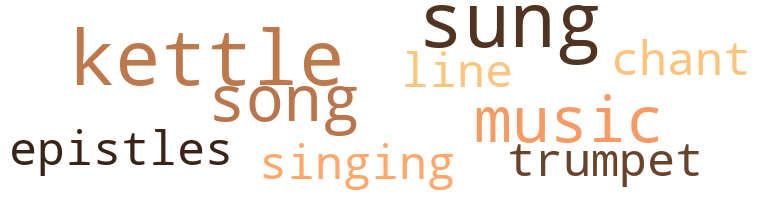
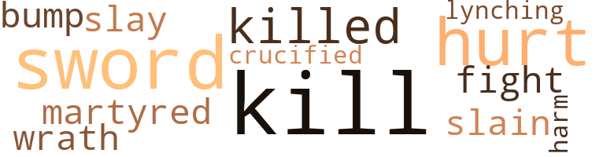
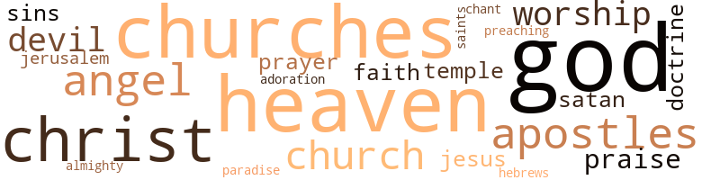

Revelation, Trial and Exile of John Epics, by Walker, Thomas H. B. (1912)
15 music-related terms matched in this text.
Most frequent terms in this topic: sung (3); kettle (3); Epistles (1); songs (1); Music (1)
cornet.n.01
Definition: a brass musical instrument with a brilliant tone; has a narrow tube and a flared bell and is played by means of valves
| word | sentence |
|---|---|
| trumpet | John saw , and behold an open door Iq heaven was standing wide , A trumpet voice proclaimed to him , If thou would see come nigh . |
epistle.n.02
Definition: a book of the New Testament written in the form of a letter from an Apostle
| word | sentence |
|---|---|
| Epistles | He was the author of five books , viz. : the book bearing his name , three Epistles and the Revelation . |
kettle.n.04
Definition: a large hemispherical brass or copper percussion instrument with a drumhead that can be tuned by adjusting the tension on it
| word | sentence |
|---|---|
| kettle | It is related by Tertullian that John was carried to Rome , and placed in a kettle of oil , a more full account of which is found in the verse of this little volume in Book One . |
| kettle | To put John in the kettle A committee was made , And five wicked of the most wicked Formed the devil 's brigade . |
| kettle | They busied themselves , Tho ' they were with heat but smothered , And never once stopped Till the kettle was covered . |
music.n.01
Definition: an artistic form of auditory communication incorporating instrumental or vocal tones in a structured and continuous manner
| word | sentence |
|---|---|
| music | When the Lamb took the Book Before Him four beasts and elders fell , There were such music and songs That it shook the gates of hell . |
| Music | When the elders played and four beasts sung , Music swept heaven as a flood , From all kindred , tongues , nations and people Came kings and priests to God . |
sing.v.02
Definition: produce tones with the voice
| word | sentence |
|---|---|
| sung | Each elder had a golden vial That was full of the sweetest odor , And while they sung a ' new , new song Each emptied his vial in order . |
| sung | When the elders played and four beasts sung , Music swept heaven as a flood , From all kindred , tongues , nations and people Came kings and priests to God . |
| sung | In heaven , in sea , in earth beneath , • All forms of creatures prayed , " Worthy the Lamb who was slain , " Were all they sung or said . |
singing.n.01
Definition: the act of singing vocal music
| word | sentence |
|---|---|
| singing | Overcome and a pillar in the temple Of my Lord thou wilt be , Out no more thou shalt go , But singing praise thy work shall be . |
song.n.01
Definition: a short musical composition with words
| word | sentence |
|---|---|
| songs | When the Lamb took the Book Before Him four beasts and elders fell , There were such music and songs That it shook the gates of hell . |
| song | Each elder had a golden vial That was full of the sweetest odor , And while they sung a ' new , new song Each emptied his vial in order . |
tone.v.01
Definition: utter monotonously and repetitively and rhythmically
| word | sentence |
|---|---|
| chant | For soon they would join their loved ones - Around that glorious throne And always chant holy praise , As they their Saviour owned . |
tune.n.01
Definition: a succession of notes forming a distinctive sequence
| word | sentence |
|---|---|
| line | An elder cried , " Weep not , John , In Judah 's tribe is revealed Of Jesse 's line and David 's stem Comes one who 'll open the seals . " |
27 violence-related terms matched in this text.
Most frequent terms in this topic: kill (7); sword (5); hurt (4); killed (2); slay (1)
bump.n.01
Definition: a lump on the body caused by a blow
| word | sentence |
|---|---|
| bump | In went the body With a drop and a bump , And out jumped the oil As the caldron caught the lump . |
crucify.v.01
Definition: kill by nailing onto a cross
| word | sentence |
|---|---|
| crucified | He told of the Christ Whom they had just crucified , Who suffered for all men On the cross when He died . |
fight.n.05
Definition: a boxing or wrestling match
| word | sentence |
|---|---|
| fight | " How they opposed apostles false Selling themselves to the devil , And , in the fight grew weary not As they try to stop evil . |
harm.v.01
Definition: cause or do harm to
| word | sentence |
|---|---|
| harm | Another said , " What heat ca n't harm , No sword can stick , And like Achilles of Troy He certainly is a trick . |
kill.v.10
Definition: cause the death of, without intention
| word | sentence |
|---|---|
| kill | " As sure as I speak , Believe me , if you will , Some fowl or beast Him surely will kill . |
| kill | " If these do not kill him , Pray tell me his salvation ; For he surely will die From the dent of starvation It took but a moment And they all did agree . |
| kill | They went forth , those partners , To destroy all joy and mirth , With hunger , sword , death and beast , They were to kill a fourth Of the inhabitants of earth . |
| killed | They were killed for praising God And preaching his holy Word " How long , 0 Lord , Holy One ? " |
| killed | They too should be slain , Like them should be killed , But a little season they should wait ' Twould then be fulfilled . |
| kill | That they should be honored To kill the servant of God , To them was the greatest gift Their country could afford . |
| kill | So they exulted over the thought As warriors do , Forgetting the dead they lose If they can only kill you . |
| kill | One said , " You ca n't kill him : This we have all found . |
| kill | He said , " Gentlemen , to kill John Is now plain to me : We will exile him Far into the ^ Egeah Sea . |
lynch.v.01
Definition: kill without legal sanction
| word | sentence |
|---|---|
| Lynching | And as they piled on the wood Around the great oil can , They looked like demons Lynching a man . |
martyr.v.01
Definition: kill as a martyr
| word | sentence |
|---|---|
| martyred | Tho ' they martyred of thy number My faithful Antipas . |
murder.v.01
Definition: kill intentionally and with premeditation
| word | sentence |
|---|---|
| slay | Men were to slay each other . |
| slain | When the fifth seal was opened , Under the altar were the slain Of those who held the testimony Of the dear Jehovah 's name . |
pain.v.02
Definition: cause emotional anguish or make miserable
| word | sentence |
|---|---|
| hurt | Until death be thou faithful And a crown of life I 'll give ; The second death shall hurt thee not , Overcome and with me live . |
| hurt | As Daniel was made to sleep On a lion 's mane , John was saved from all hurt That came from the flames . |
| hurt | Thus spoke each of the rulers As it came their turn , " No heat can hurt him As he fire will not burn . " |
| hurt | All laughed and made grimaces , As they their heads did pound : " Why , you certainly ca n't hurt him , For he water will not drown . |
sword.n.01
Definition: a cutting or thrusting weapon that has a long metal blade and a hilt with a hand guard
| word | sentence |
|---|---|
| sword | His eyes like a flame of fire , Out his mouth came a sword ; Like burnished brass Were the feet of the Lord . |
| sword | To the angel of Pergamum Saith He that hath the two-edge sword , I know thou Iivest where Satan builds Up his throne against my word . |
| sword | Blood like water flowed , For to the rider was given A great and sharp sword . |
| sword | They went forth , those partners , To destroy all joy and mirth , With hunger , sword , death and beast , They were to kill a fourth Of the inhabitants of earth . |
| sword | Another said , " What heat ca n't harm , No sword can stick , And like Achilles of Troy He certainly is a trick . |
wrath.n.01
Definition: intense anger (usually on an epic scale)
| word | sentence |
|---|---|
| wrath | " Hide me from the Lamb 's face , Hide me if you can , For the great day of his wrath is comer And who shall be able to stand ? " |
85 religion-related terms matched in this text.
Most frequent terms in this topic: God (14); Christ (8); heaven (7); churches (7); church (3)
apostle.n.03
Definition: (New Testament) one of the original 12 disciples chosen by Christ to preach his gospel
| word | sentence |
|---|---|
| Apostles | John , the beloved disciple , was the youngest of the Apostles . |
| apostles | Now in those times the apostles Were so holy in their ways That for Sabbath worship They devoted two days . |
| apostles | " How they opposed apostles false Selling themselves to the devil , And , in the fight grew weary not As they try to stop evil . |
| apostles | Oh church of God so pure , In those apostles ' time , No little mean and narrow things Did ever affect their mind . |
| Apostles | From an expression once made by the blessed Jesus the Apostles got the impression that John would never die . |
church.n.02
Definition: a place for public (especially Christian) worship
| word | sentence |
|---|---|
| churches | " The seven candle sticks My churches they are , The angels of the churches Are the seven stars . |
| church | To the church in Philadelphia Saith the Holy One that 's true . |
church.n.04
Definition: the body of people who attend or belong to a particular local church
| word | sentence |
|---|---|
| churches | " To let them know that you yet live Tho ' the world tries to besmirch us , Write this Revelation letter To all the seven churches . |
| churches | " The seven candle sticks My churches they are , The angels of the churches Are the seven stars . |
| CHURCHES | JOHN IS COMMANDED TO WRITE UNTO THE CHURCHES . |
| churches | " What the Spirit saith to the churches Ye that hath an ear hear : Thou art blessed that overcometh , You need not fear . |
| church | Write to the church of Smyrna , These things saith the first and last , Who was dead yet lives again , And has lived all in the past . |
| churches | What the Spirit says to the churches , Overcome , get hidden manna , And a stone most white and precious . |
| churches | As received I of my Father , I will give thee the morning star , Thus saith the Spirit to the churches , Let him hear that has an ear . |
| Church | Write the angel of the Church of Sardis , God 's seven Spirit at my command , I 'm he that liveth and art dead , I hold seven stars in my right hand . |
| churches | Thus closed the letters to seven churches , In all ages they cover From century to century unfurling The mysteries of our elder brother . |
| church | Oh church of God so pure , In those apostles ' time , No little mean and narrow things Did ever affect their mind . |
doctrine.n.01
Definition: a belief (or system of beliefs) accepted as authoritative by some group or school
| word | sentence |
|---|---|
| doctrine | But a few things hold I against thee , Thou the doctrine of Balaam taught , And some have practiced fornication , Almost brought my work to naught . |
| doctrine | " Liar thou art ; Die thou must ; So odious thy doctrine Thou my soul disgust . |
eden.n.01
Definition: any place of complete bliss and delight and peace
| word | sentence |
|---|---|
| Paradise | " Thou shalt eat the luscious fruit That grow in Paradise , That is found in God 's orchard Of the tree of life . " |
| heaven | A few names yet are in Sardis That shall see the heaven bright ; They are worthy to be honored ; They shall walk with me in white . |
| heaven | John saw , and behold an open door Iq heaven was standing wide , A trumpet voice proclaimed to him , If thou would see come nigh . |
| heaven | I saw in heaven like a pyramid A shining , dazzling throne , And brighter still was the form Of him that sat thereon . |
| heaven | " He searched heaven and sky , Even hell and underground , With discontent he left each ; For no one could be found . " |
| heaven | When the elders played and four beasts sung , Music swept heaven as a flood , From all kindred , tongues , nations and people Came kings and priests to God . |
| heaven | In heaven , in sea , in earth beneath , • All forms of creatures prayed , " Worthy the Lamb who was slain , " Were all they sung or said . |
| heaven | The sun was dark as sackcloth black , The moon became as blood , The stars of heaven fell to earth , And covered the ground as a flood . |
| heavens | The heavens departed as a scroll , Confusion was everywhere . |
| heavens | Till the sun leaves his place , Till the last son of Adam Has died in the race ; " Till the stars and moon Fade and grow dim , And the heavens grow old , I 'll not deny Him ! |
god.n.03
Definition: a man of such superior qualities that he seems like a deity to other people
| word | sentence |
|---|---|
| God | They led the servant of God To the edge of the sea , Where a boat had been mooring Since the rise of the sun ; They , it employed To make the great run . |
| God | " Thou shalt eat the luscious fruit That grow in Paradise , That is found in God 's orchard Of the tree of life . " |
| God | On the lonely Isle of Patmos , A servant of God Was sent in exile For preaching the Word . |
| God | Write the angel of the Church of Sardis , God 's seven Spirit at my command , I 'm he that liveth and art dead , I hold seven stars in my right hand . |
| God | To Laodicea write saith amen , The faithful and witness true , The beginning of God 's creation , I know the work that thou do . |
| God | Six wings did have each cherubim , Wings covered with eyes like feathers , They cried Lord , God Almighty thou art , Was , and shall be forever and ever . |
| God | When the elders played and four beasts sung , Music swept heaven as a flood , From all kindred , tongues , nations and people Came kings and priests to God . |
| God | Oh church of God so pure , In those apostles ' time , No little mean and narrow things Did ever affect their mind . |
| God | They were killed for praising God And preaching his holy Word " How long , 0 Lord , Holy One ? " |
| God | While a disciple of John the Baptist , his soul was cheered one day to hear his master say " Behold the Lamb of God who taketh away the sins of the world . " |
| God | But there is a God --- They had forgotten His name --- The God who heard the Hebrews On Dura 's plains . |
| God | The God who sleeps neither night Nor in the longest day , But in the rule of this world Must have His way . |
| God | The ordinary man by the oil Would have drowned ; But God is the same On the water or ground . |
| God | And just like his Master , God 's own dearSon , He began preaching the gospel To them , every one . |
godhead.n.01
Definition: terms referring to the Judeo-Christian God
| word | sentence |
|---|---|
| Almighty | Six wings did have each cherubim , Wings covered with eyes like feathers , They cried Lord , God Almighty thou art , Was , and shall be forever and ever . |
jerusalem.n.01
Definition: capital and largest city of the modern state of Israel (although its status as capital is disputed); it was captured from Jordan in 1967 in the Six Day War; a holy city for Jews and Christians and Muslims; was the capital of an ancient kingdom
| word | sentence |
|---|---|
| Jerusalem | John was admitted with two other disciples into all the secret passages of the blessed Lord 's life , and even at the last hour when Jesus was dying , before giving up the ghost he committed his mother for care and protection into the hands of John , who it is supposed labored in the ministry about Jerusalem , after our Saviour 's crucifixion , for sixteen years , till Mary died . |
| Jerusalem | 2:3-9 , Paul on his third journey met him at Jerusalem . |
jesus.n.01
Definition: a teacher and prophet born in Bethlehem and active in Nazareth; his life and sermons form the basis for Christianity (circa 4 BC - AD 29)
| word | sentence |
|---|---|
| Jesus | From an expression once made by the blessed Jesus the Apostles got the impression that John would never die . |
| Jesus | John was admitted with two other disciples into all the secret passages of the blessed Lord 's life , and even at the last hour when Jesus was dying , before giving up the ghost he committed his mother for care and protection into the hands of John , who it is supposed labored in the ministry about Jerusalem , after our Saviour 's crucifixion , for sixteen years , till Mary died . |
jew.n.01
Definition: a person belonging to the worldwide group claiming descent from Jacob (or converted to it) and connected by cultural or religious ties
| word | sentence |
|---|---|
| Hebrews | But there is a God --- They had forgotten His name --- The God who heard the Hebrews On Dura 's plains . |
messiah.n.01
Definition: any expected deliverer
| word | sentence |
|---|---|
| Christ | Christ said , " Get up , John ; " With His hand touched him . |
| Christ | The trio select of the Christ , The younger of the three . |
| Christ | " Art thou a follower Of him they call Christ ; Who died on the cross , From the dead did rise ? |
| Christ | Immediately he followed the Christ . |
| Christ | There the fishes would feast On the fisher of men , And the gospel of the Christ Would come to an end . |
| Christ | They said , " Your Christ deny or die ! |
| Christ | They then spoke to the prisoner --- Demanded of him why He could not stop his errors And this Christ deny . |
| Christ | He told of the Christ Whom they had just crucified , Who suffered for all men On the cross when He died . |
praise.n.02
Definition: offering words of homage as an act of worship
| word | sentence |
|---|---|
| praise | Overcome and a pillar in the temple Of my Lord thou wilt be , Out no more thou shalt go , But singing praise thy work shall be . |
| praise | Worthy art thou , 0 Lamb , said they , To receive honor , glory , power , Created all things by thee for thy pleasure : Accept our praise this hour . |
| praise | For soon they would join their loved ones - Around that glorious throne And always chant holy praise , As they their Saviour owned . |
prayer.n.01
Definition: the act of communicating with a deity (especially as a petition or in adoration or contrition or thanksgiving)
| word | sentence |
|---|---|
| prayer | As the good Book tells In a very vivid way , John was kneeling in prayer On the Holy Lord 's Day . |
| Prayer | The vials held the Prayer of Saints , , That went up from old earth , Mixed with sadness , sorrow , pain , Groans , and maybe a little mirth . |
religion.n.01
Definition: a strong belief in a supernatural power or powers that control human destiny
| word | sentence |
|---|---|
| faith | Thou my faith did not deny , My name thou didst hold fast . |
| faith | Write to the angel of Thyatira , Thus saith the Son of God , I know thy works , faith and ministry , Thy patience and thy love . |
saint.n.02
Definition: person of exceptional holiness
| word | sentence |
|---|---|
| angels | " The seven candle sticks My churches they are , The angels of the churches Are the seven stars . |
| angels | In life 's book his name shall stand ; For I know he did his best , Before my Father and the angels I his name will confess . |
| angel | With a strong loud voice an angel proclaimed " Who is worthy to open the book ; Its seals to loose , the debt to pay , Or even on it look . " |
| angel | And when John saw that none was found He began to cry and weep , " With drooping wings the angel returned , And around the throne did seek . |
| Saints | The vials held the Prayer of Saints , , That went up from old earth , Mixed with sadness , sorrow , pain , Groans , and maybe a little mirth . |
| angels | John said when the Lamb took his seat Ten thousand angels he saw , And thousands of thousands cried so loud That he was filled with awe . |
satan.n.01
Definition: (Judeo-Christian and Islamic religions) chief spirit of evil and adversary of God; tempter of mankind; master of Hell
| word | sentence |
|---|---|
| devil | " How they opposed apostles false Selling themselves to the devil , And , in the fight grew weary not As they try to stop evil . |
| Satan | I know thy poverty and tribulation , Blasphemy is Satan 's part ; How in prison they 'll cast thee , But rich indeed thou art . |
| Satan | To the angel of Pergamum Saith He that hath the two-edge sword , I know thou Iivest where Satan builds Up his throne against my word . |
| devil | To put John in the kettle A committee was made , And five wicked of the most wicked Formed the devil 's brigade . |
| devil | But up stood an old man That the devil had taught , And from the breast of the judges Drove the good thought . |
sermon.n.02
Definition: a moralistic rebuke
| word | sentence |
|---|---|
| preaching | " I take thee to exile , I take thee to death , And as far as your preaching , You all people have left . |
sin.n.06
Definition: violent and excited activity
| word | sentence |
|---|---|
| sins | " To Smyrna and Pergamura , Sardis , Thyatira and Ephesus , Laodicea and Philadelphia , And tell them I Jesus , " Your Savior and friend , Who in all ages doth live , Remain as anxious as ever Their sins to forgive . " |
| sins | While a disciple of John the Baptist , his soul was cheered one day to hear his master say " Behold the Lamb of God who taketh away the sins of the world . " |
temple.n.03
Definition: an edifice devoted to special or exalted purposes
| word | sentence |
|---|---|
| temple | Overcome and a pillar in the temple Of my Lord thou wilt be , Out no more thou shalt go , But singing praise thy work shall be . |
| temple | Oh Lord , behold thy temple , Explain thy morning star . |
tone.v.01
Definition: utter monotonously and repetitively and rhythmically
| word | sentence |
|---|---|
| chant | For soon they would join their loved ones - Around that glorious throne And always chant holy praise , As they their Saviour owned . |
worship.n.01
Definition: the activity of worshipping
| word | sentence |
|---|---|
| worship | Now in those times the apostles Were so holy in their ways That for Sabbath worship They devoted two days . |
| worship | And said , " We worship thee , Thou Lamb was slain , The way that we know how . " |
| worship | And bowed to worship him , With far more adoration Than ever was known to men . |
worship.n.02
Definition: a feeling of profound love and admiration
| word | sentence |
|---|---|
| adoration | And bowed to worship him , With far more adoration Than ever was known to men . |